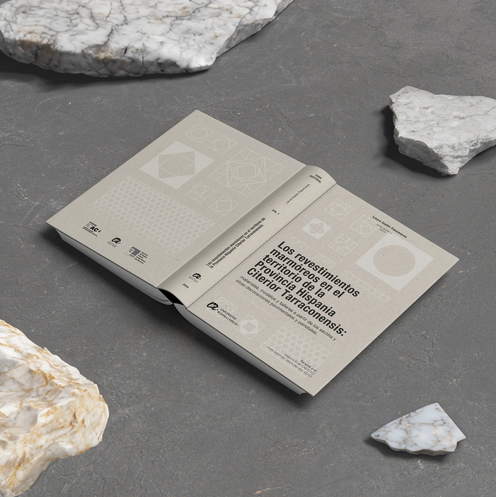

Print illustrations are essential for communicating archaeological research beyond the digital sphere. In this example of a thesis book cover that I designed, my goal was to combine scientific accuracy with artistic sensitivity. Drawing inspiration from the themes of each research project, I sought to create visuals that resonate with both scholarly audiences and the broader public, while preserving clarity and conceptual depth.